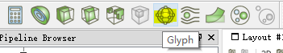
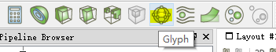

ParaView初识与入门
ParaView 是一款开源的，跨平台的数据分析和可视化软件。它基于VTK（Visualiza -tion ToolKit）而开发的，能够对大批量数据进行分析及可视化。同时，支持并行计算，可以运行于分布式的大型计算机。此外，能与Python，ParaViewWeb等结合使用。下面主要来介绍这款软件相关使用方法。
软件版本选择及其安装
首先需要打开ParaView官方页面，进行相应版本的下载，以免装版“ParaView-5.5.0-Qt5-Windows-64bit.zip”/为例。
解压文件后，会出现下列文件夹（图中高亮部分）。
然后打开bin文件夹，找到paraview可执行文件（图中高亮部分）。
打开软件后，可以通过点击“Getting Started Guide”打开官方说明手册（只有英文说明）。
相关基础操作说明
首先说明图中相关部分
1. 重置Paraview ![图标1]() 单击上面图标后，会弹出如下界面，即可重置paraview到初始状态
撤消（undo）和恢复(redo)操作图标
单击上面图标后，会弹出如下界面，即可重置paraview到初始状态
撤消（undo）和恢复(redo)操作图标![图标2]() 2. 单击打开图标
2. 单击打开图标 ![图标3]() 显示如下界面，这里可以选择打开Examples/can.ex2文件
显示如下界面，这里可以选择打开Examples/can.ex2文件
 将在Paraview主界面的左上侧Pipeline Browser显示
将在Paraview主界面的左上侧Pipeline Browser显示
 3. 单击左下角“Properties panel”中Variables旁边的选框，选中全部变量（高亮部分）
4. 单击图标
3. 单击左下角“Properties panel”中Variables旁边的选框，选中全部变量（高亮部分）
4. 单击图标![图标4]() 把变量数据加载，在主窗口实现可视化，如下图所示
5. 在主窗口，按住鼠标左键，并移动，可以对可视化的模型进行旋转；
6. 按住鼠标右键，移动可以对模型进行缩放（鼠标中轮也可以实现相应功能）。
而单击高亮的部分，下图所示，也可以把模型置中
把变量数据加载，在主窗口实现可视化，如下图所示
5. 在主窗口，按住鼠标左键，并移动，可以对可视化的模型进行旋转；
6. 按住鼠标右键，移动可以对模型进行缩放（鼠标中轮也可以实现相应功能）。
而单击高亮的部分，下图所示，也可以把模型置中
![图标5]() 这里也可以通过选择下图中按钮，实现不同视角下模型显示，同样可以进行缩放，旋转，坐标轴显示等操作。
7. 单击“play”按钮
这里也可以通过选择下图中按钮，实现不同视角下模型显示，同样可以进行缩放，旋转，坐标轴显示等操作。
7. 单击“play”按钮
![图标6]() 即可以动态显示压碎的过程
8. 给变量数据添加其他颜色映射，单击图中高亮部分的下拉选框并选择“EQPS”，其结果如下图所示。
9. 此后，为了添加矢量符号，单击图中的Glyph 按钮即可；

然后在属性“Properties”面板，找到“Active Attributes”选项，并选择“VEL”模式；同时，找到“Scaling”选项，选择“vector”模式
10. 之后单击属性面板（Properties）右下角的重置按钮（图中高亮部分）
11. 单击Apply按钮后，即可可视化模型中显示矢量符号
即可以动态显示压碎的过程
8. 给变量数据添加其他颜色映射，单击图中高亮部分的下拉选框并选择“EQPS”，其结果如下图所示。
9. 此后，为了添加矢量符号，单击图中的Glyph 按钮即可；

然后在属性“Properties”面板，找到“Active Attributes”选项，并选择“VEL”模式；同时，找到“Scaling”选项，选择“vector”模式
10. 之后单击属性面板（Properties）右下角的重置按钮（图中高亮部分）
11. 单击Apply按钮后，即可可视化模型中显示矢量符号
参考来源 ParaView 指南 ParaView 官方教程（英语）
您也可以请我喝一杯咖啡,支持我的创作~ 比特币（BTC）:1FLHDgSp76u3CoasTF7fDyYBooGv8Frh5f 比特币现金（BCH）:1FLHDgSp76u3CoasTF7fDyYBooGv8Frh5f Ethereum (ETH): 0x5061c5ddeb4f82e3070a4bd593d2b1cc90d1bfc4